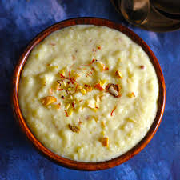

|  |
Description:Phirni is a creamy and aromatic Indian dessert made with ground rice, milk, sugar, and fragrant spices like cardamom and saffron. It is distinct from Kheer, which uses whole rice grains and is typically served warm. Phirni, on the other hand, is generally served chilled for a refreshing experience. |